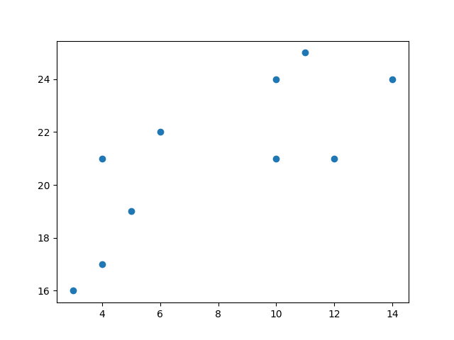
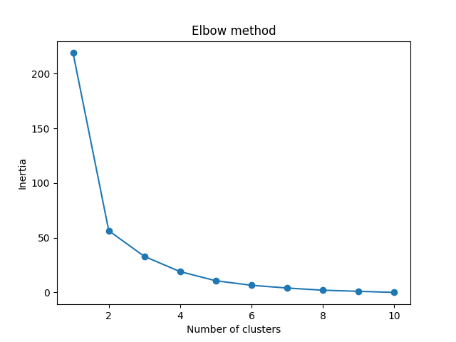
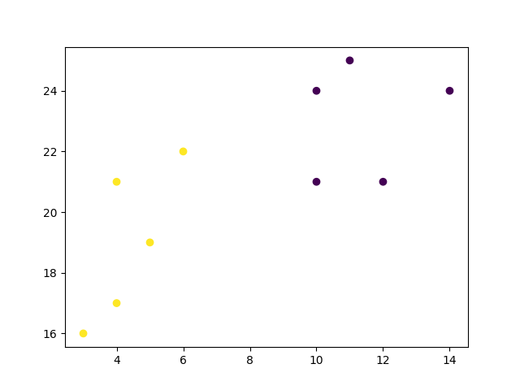

机器学习 - K-means
K-means
K-means 是一种用于聚类数据点的无监督学习方法。该算法通过最小化每个聚类中的方差，迭代地将数据点划分为 K 个聚类。
在这里，我们将向您展示如何使用肘部方法估计 K 的最佳值，然后使用 K-means 聚类将数据点分组为聚类。
它是如何工作的？
首先，每个数据点被随机分配给一个 K 聚类。然后，我们计算每个聚类的质心（功能上的中心），并将每个数据点重新分配给具有最近质心的聚类。我们重复此过程，直到每个数据点的聚类分配不再更改。
K-means 聚类需要我们选择 K，即我们希望将数据分组的聚类数量。肘部方法允许我们绘制惯性（基于距离的度量）图，并可视化它开始线性减少的点。这个点被称为“肘部”，是基于我们的数据估计 K 的最佳值的一个好方法。
实例
首先，可视化一些数据点：
import matplotlib.pyplot as plt x = [4, 5, 10, 4, 3, 11, 14 , 6, 10, 12] y = [21, 19, 24, 17, 16, 25, 24, 22, 21, 21] plt.scatter(x, y) plt.show()
结果：

现在我们利用肘部方法来可视化不同 K 值的惯性：
实例
from sklearn.cluster import KMeans
data = list(zip(x, y))
inertias = []
for i in range(1,11):
kmeans = KMeans(n_clusters=i)
kmeans.fit(data)
inertias.append(kmeans.inertia_)
plt.plot(range(1,11), inertias, marker='o')
plt.title('Elbow method')
plt.xlabel('Number of clusters')
plt.ylabel('Inertia')
plt.show()
结果：

肘部方法显示 2 是 K 的一个好值，因此我们重新训练并可视化结果：
实例
kmeans = KMeans(n_clusters=2) kmeans.fit(data) plt.scatter(x, y, c=kmeans.labels_) plt.show()
结果：

例子解释
导入您需要的模块。
import matplotlib.pyplot as plt from sklearn.cluster import KMeans
你可以在我们的 Matplotlib 教程 中学习 Matplotlib 模块。
scikit-learn 是一个流行的机器学习库。
创建类似于数据集中两个变量的数组。请注意，尽管我们在这里只使用两个变量，但这种方法适用于任何数量的变量：
x = [4, 5, 10, 4, 3, 11, 14 , 6, 10, 12] y = [21, 19, 24, 17, 16, 25, 24, 22, 21, 21]
将数据转换为一系列点：
data = list(zip(x, y)) print(data)
结果：
[(4, 21), (5, 19), (10, 24), (4, 17), (3, 16), (11, 25), (14, 24), (6, 22), (10, 21), (12, 21)]
为了找到 K 的最佳值，我们需要在可能值的范围内对数据运行 K-means。我们只有 10 个数据点，因此聚类的最大数量是 10。因此，对于每个范围 (1,11) 中的值 K，我们训练一个 K-means 模型，并在该数量的聚类下绘制惯性：
inertias = []
for i in range(1,11):
kmeans = KMeans(n_clusters=i)
kmeans.fit(data)
inertias.append(kmeans.inertia_)
plt.plot(range(1,11), inertias, marker='o')
plt.title('Elbow method')
plt.xlabel('Number of clusters')
plt.ylabel('Inertia')
plt.show()
结果：
我们可以看到，上述图表中的“肘部”（惯性开始变得更为线性的点）在 K=2。然后我们可以再次拟合我们的 K-means 算法，并绘制分配给数据的不同聚类：
kmeans = KMeans(n_clusters=2) kmeans.fit(data) plt.scatter(x, y, c=kmeans.labels_) plt.show()
结果：